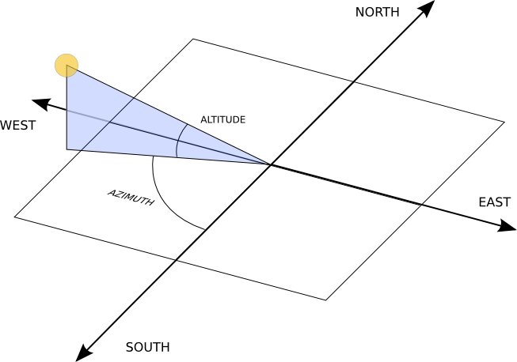

Location calculation
You can figure out your latitude and longitude from the URL from the "Link to this page" link on Google maps. Find your location on the map, click on the "Link to this page" link, and then look at the URL in the address bar of your browser. In between ampersands, you should see something like ll=89.123456,-78.912345. The first number is your latitude; the second is your longitude.The reference frame for Pysolar is shown in the figure below. Altitude is reckoned with zero at the horizon. The altitude is positive when the sun is above the horizon. Azimuth is reckoned with zero corresponding to south. Positive azimuth estimates correspond to estimates east of south; negative estimates are west of south. In the northern hemisphere, if we speak in terms of (altitude, azimuth), the sun comes up around (0, 90), reaches (70, 0) around noon, and sets around (0, -90).

Then, use the solar.GetAltitude() function to calculate the angle between the sun and a plane tangent to the earth where you are. The result is returned in degrees.
host:~/pysolar$ python Python 2.5.1 (r251:54863, May 2 2007, 16:56:35) [GCC 4.1.2 (Ubuntu 4.1.2-0ubuntu4)] on linux2 Type "help", "copyright", "credits" or "license" for more information. >>> import solar >>> import datetime >>> d = datetime.datetime.utcnow() # create a datetime object for now >>> solar.GetAltitude(42.206, -71.382, d) -20.453156227223857 >>> d = datetime.datetime(2007, 2, 18, 20, 13, 1, 130320) # try another date >>> solar.GetAltitude(42.206, -71.382, d) 19.551710266768644
You can also calculate the azimuth of the sun, as shown below.
>>> solar.GetAzimuth(42.206, -71.382, datetime.datetime(2007, 2, 18, 20, 18, 0, 0)) -51.622484299859529
Estimate of clear-sky radiation
Once you calculate azimuth and altitude of the sun, you can predict the direct irradiation from the sun using solar.GetRadiationDirect(), which returns a value in watts per square meter. As of version 0.2, the function is *not* smart enough to return zeros at night (thus the crazy 1814 W/m^2 output below). It does account for the scattering of light by the atmosphere, though it uses an atmospheric model based on data taken in the United States.>>> latitude_deg = 42.3 # positive in the northern hemisphere >>> longitude_deg = -71.4 # negative reckoning west from prime meridian in Greenwich, England >>> altitude_deg = solar.GetAltitude(latitude_deg, longitude_deg, d) >>> azimuth_deg = solar.GetAzimuth(latitude_deg, longitude_deg, d) >>> solar.GetRadiationDirect(d, altitude_deg) 1814.2039909409739
Shading calculation
For a row of rectangular photovoltaic panels that track the sun, adjacent panels will shade each other in the morning and afternoon, reducing power output. You can create a power estimate that takes into account the shading of adjacent panels.>>> import shade >>> width = 100 >>> height = 200 >>> x_spacing = 120 >>> y_spacing = 120 >>> xs = shade.GetXShade(width, x_spacing, azimuth_deg) >>> ys = shade.GetYShade(height, y_spacing, altitude_deg) >>> shaded_area = xs * ys >>> shaded_percentage = shaded_area/(width * height)

The graph above was created by calculating the power, including attenuation due to shading, at an interval of 30 minutes. The attenuation is assumed to be linearly proportional to area, which is probably optimistic, even if bypass diodes are used. The graph was created with matplotlib; see shade_test.py for usage.